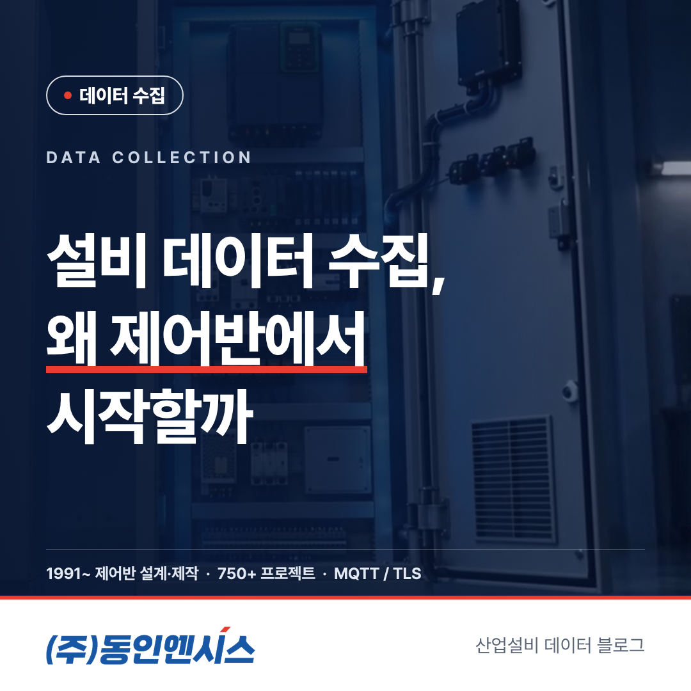
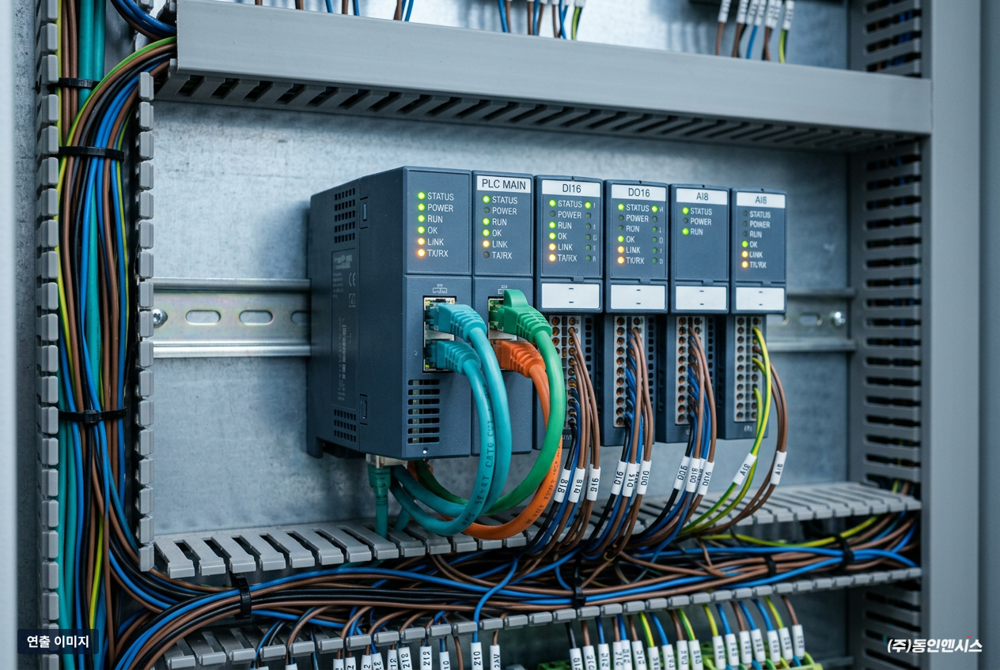
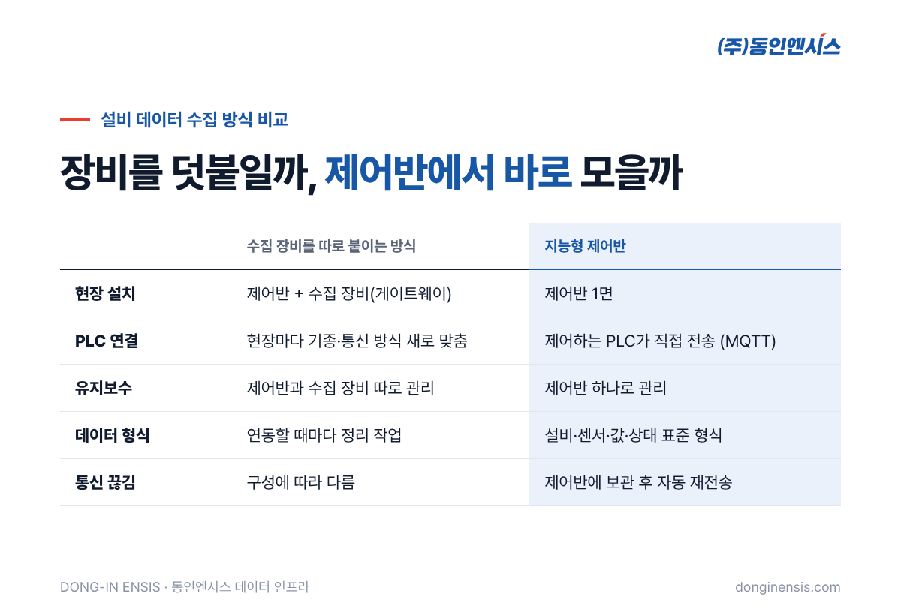
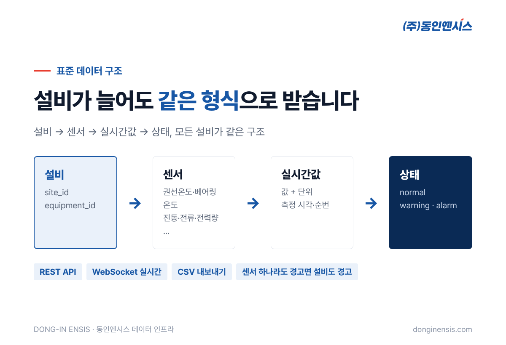
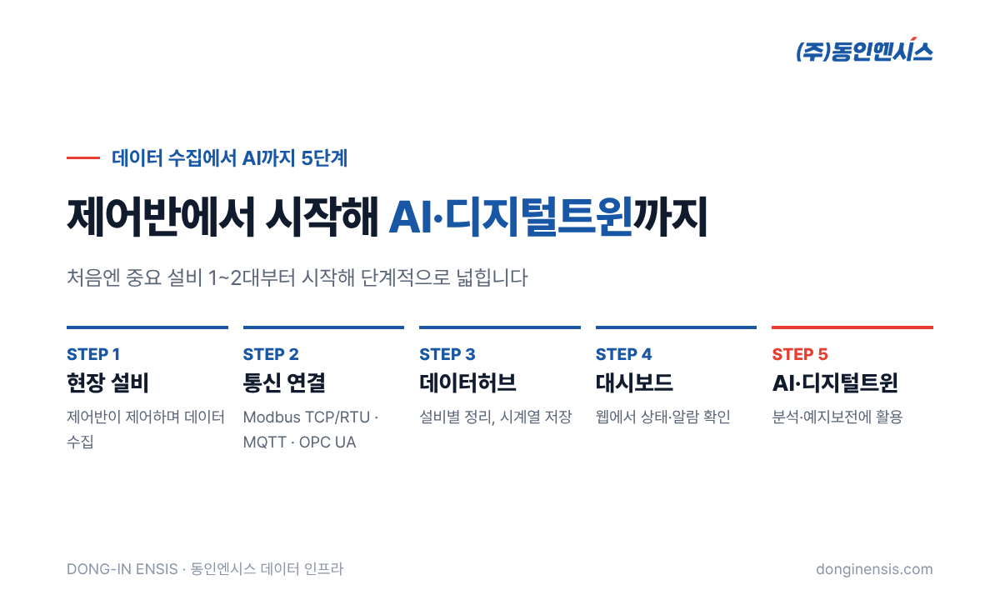
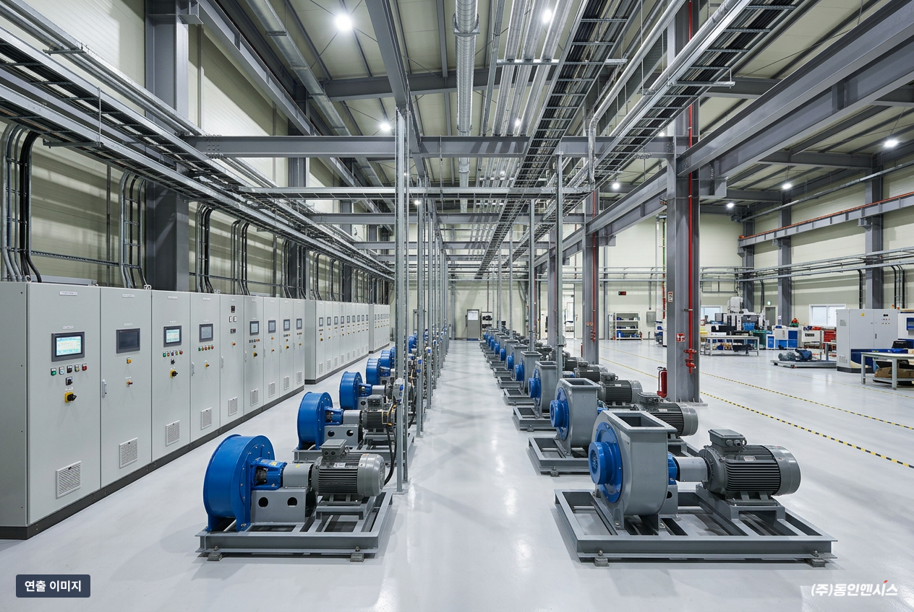

스마트팩토리, AI 예지보전, 디지털트윈. 요즘 제조 현장에서 자주 듣는 말들입니다. 그런데 이 모든 것에는 공통된 출발점이 있습니다. 바로 설비 데이터 수집입니다. 이 글에서는 35년 가까이 제어반을 만들어 온 동인엔시스의 현장 경험을 바탕으로, 설비 데이터를 어디서부터 모아야 하는지, 그리고 왜 제어반이 가장 확실한 출발점인지 정리해 보겠습니다.
몇 년 전까지만 해도 설비 관리는 사람의 경험에 크게 기대는 일이었습니다. 오래 일한 담당자가 소리만 듣고도 "저 펌프 베어링 볼 때가 됐다"고 알아채는 식이었습니다. 지금은 그런 숙련 인력이 점점 줄어들고 있습니다. 경험을 다음 사람에게 넘겨줄 방법이 필요해졌고, 그 방법이 바로 데이터입니다.
또 하나의 이유는 MES, AI, 디지털트윈 같은 시스템이 빠르게 늘고 있다는 점입니다. 이 시스템들은 모두 데이터를 먹고 움직입니다. 아무리 좋은 AI 프로그램을 도입해도, 현장 설비에서 믿을 수 있는 데이터가 들어오지 않으면 화면만 화려한 시스템이 되고 맙니다.
공장의 펌프, 송풍기, 압축기는 대부분 PLC와 인버터로 제어됩니다. 모터에 전류가 얼마나 흐르는지, 회전속도가 얼마인지 같은 정보는 이 제어 장치 안에서 매 순간 오가고 있습니다.
문제는 이 정보가 제어반 밖으로 잘 나오지 않는다는 점입니다. 제어반은 원래 설비를 움직이기 위해 만들어졌지, 데이터를 내보내기 위해 만들어진 장치가 아니기 때문입니다. 그래서 설비 상태를 알고 싶으면 사람이 현장을 돌며 확인하거나, 데이터를 모으는 장비를 따로 붙여야 했습니다.

데이터 수집용 장비(게이트웨이)를 따로 붙이는 방식도 분명 방법입니다. 하지만 현장에서는 몇 가지 어려움이 반복됩니다.
동인엔시스 백민기 대표는 이렇게 말합니다. "AI와 스마트팩토리가 제 역할을 하려면 현장 설비 데이터가 우선 확보되어야 한다."

설비 데이터라고 하면 막막하게 느껴질 수 있습니다. 처음에는 아래 네 가지부터 시작하는 경우가 많습니다.
이 데이터들은 하나만 볼 때보다 함께 볼 때 더 많은 것을 알려 줍니다. 예를 들어 전류는 그대로인데 베어링 온도만 오른다면 부하보다는 베어링 쪽을 먼저 의심해 볼 수 있습니다.
제어반이 데이터 수집까지 맡으면 구조가 단순해집니다. 설비를 돌리는 PLC와 인버터가 이미 알고 있는 값에 온도·진동 센서 값을 더해 하루 24시간 남기고, MQTT로 클라우드나 사내 서버에 곧장 올립니다. 현장에 들어가는 장비는 동인엔시스 지능형 제어반 한 면이 전부입니다.
데이터 형식도 처음부터 맞춰서 보냅니다. 설비마다 고유 번호를 붙이고, 센서마다 값·단위·상태(정상·경고·알람)를 같은 형식으로 정리합니다. 그래서 설비가 늘어나도 데이터를 받는 쪽에서 연동 작업을 새로 할 필요가 없습니다.

미쓰비시·LS·지멘스처럼 다른 회사 PLC가 이미 돌고 있는 공장도 많습니다. 이때는 기존 PLC를 건드리지 않고 값을 읽어 오는 것까지만 합니다. 통신은 OPC UA를 먼저 보고, 어려우면 Modbus TCP, 그다음 제조사 전용 방식(게이트웨이) 순으로 고릅니다. 인터록과 최종 제어 권한은 계속 현장 PLC에 남고, 서버가 설비를 움직이는 일은 없습니다.
통신이 끊기는 상황도 대비되어 있습니다. 연결이 끊긴 동안의 측정값은 제어반에 보관했다가, 통신이 돌아오면 오래된 순서대로 다시 보냅니다. 값마다 현장에서 찍은 시각과 일련번호가 붙어 있어, 서버는 무엇이 빠졌고 무엇이 두 번 들어왔는지 스스로 걸러 냅니다.
동인엔시스는 설비 데이터 수집을 다섯 단계로 연결합니다.

처음부터 다섯 단계를 모두 갖출 필요는 없습니다. 중요한 설비 1~2대에서 데이터를 모으기 시작하고, 효과를 확인하며 넓혀 가는 방식을 권합니다.

설비 데이터 수집을 처음 시작하는 현장에서 자주 보는 실수가 몇 가지 있습니다.
MES나 AI 솔루션을 만드는 IT기업이라면, 현장 설비와 연결하는 OT 구간이 가장 부담스러운 부분일 수 있습니다. 동인엔시스는 이 구간, 즉 제어반 설계·제작·설치와 PLC·센서 연동, 시운전을 맡습니다. IT기업은 표준 API로 데이터를 받아 플랫폼과 서비스 고도화에 집중하면 됩니다. 제조 고객 발굴이나 정부 지원사업 참여도 함께할 수 있습니다.
Q. 이미 데이터 수집 장비를 쓰고 있는 현장도 가능한가요? 가능합니다. 기존 제어반을 교체하거나 새로 설치하는 방법, 기존 설비와 연동하는 방법 가운데 현장에 맞는 쪽을 제안해 드립니다.
Q. 모은 데이터는 누구 것인가요? 프로젝트마다 계약에서 역할과 데이터 소유·이용 범위, 보관 기간을 정합니다.
Q. 회사 보안 정책상 외부 클라우드를 쓸 수 없어요. 괜찮습니다. 서버를 회사 내부망에 두는 온프레미스형으로 구성하면 데이터가 회사 밖으로 나가지 않습니다.
Q. 우리는 MES를 만드는 IT기업인데, 연동을 미리 시험해 볼 수 있나요? 네. 샘플 데이터로 구조를 먼저 확인하고, 시연 장비로 실제 연동을 검증하는 순서로 진행합니다.
설비 데이터 수집은 스마트팩토리의 첫 단추입니다. 데이터는 이미 제어반 안에 있습니다. 그렇다면 그 데이터를 가장 정확하게, 가장 적은 장비로 꺼낼 수 있는 곳도 제어반입니다. 동인엔시스는 1991년부터 산업·선박 현장의 제어반을 직접 설계·제작해 온 경험으로, 제어반을 설비 데이터의 출발점으로 만들고 있습니다.
공장 설비에서 무엇을 모을 수 있는지 알고 싶다면, 홈페이지 진단 신청 페이지에 대상 설비를 적어 보내 주세요. 영업일 기준 1~2일 안에 담당 엔지니어가 연락드립니다.
상담 051-862-3668 | dongin@donginmne.com
아래 질문 중 하나에 실제 경험으로 답해 본문 적당한 곳에 넣어 주세요. 사람이 직접 쓴 문장이 들어가면 네이버에서 저품질 위험이 줄고 노출에 도움이 됩니다.